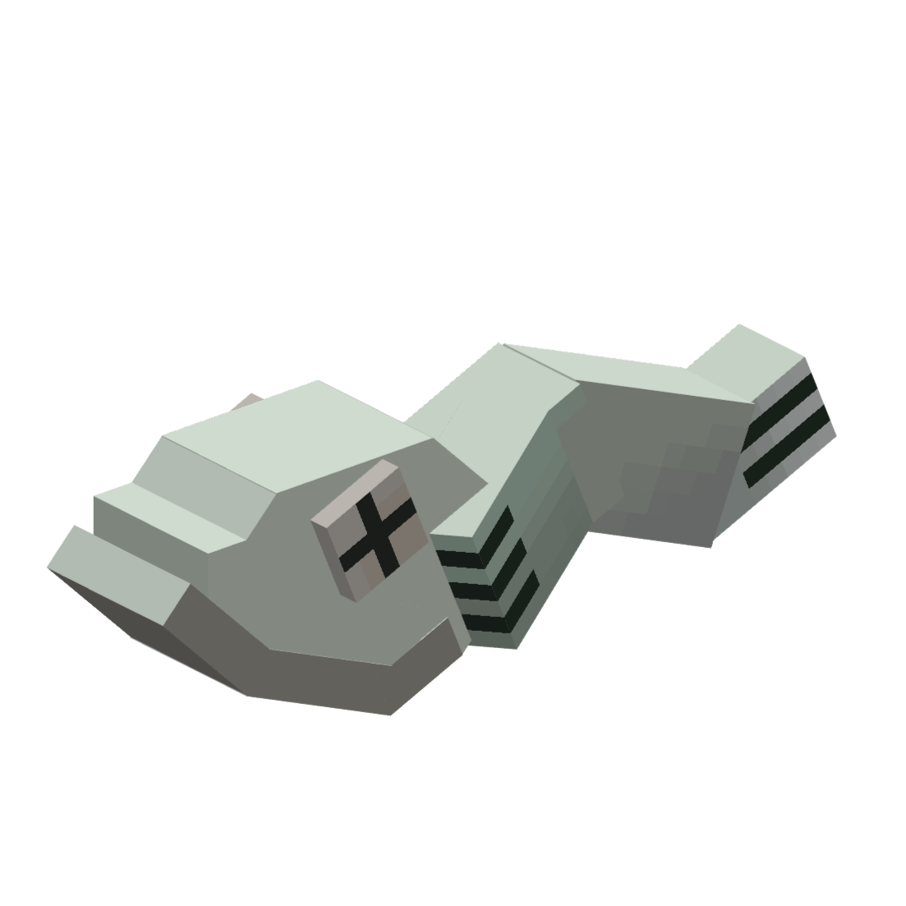

Splattershot

Splattershot as of newer versions

Old version (Added in version 1.0)
| Basic information | |
|---|---|
| Type of Weapon | Main |
| Class | Shooter |
| Range | |
| Damage | |
| Fire rate | |
| Crafting |
x5
x14
 x4 x4
Craft at an Ammo Knights Workbench |
| Specifications | |
| Base damage | 8 |
| Ink consumption | 0.9 |